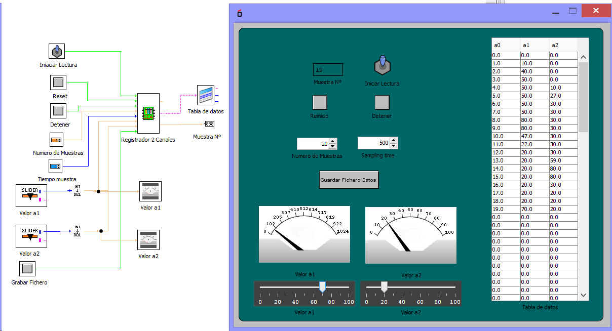

Exte dispositivo es miy útilpara recoger datos y gradarlos en un fchero.
Las señales de entrada son:
Iniciar: Inicia la carga de datos
Reset: Reinicia la captura de datos
Detener: Detiene la captura de datos
nº de Datos a Registrar: Es el nunero de muestras a tomar.
tiempo de muestreo: tiempo entte muestra y muestra
Canal 1: Canal por el que entran el dato a1 de tipo dbl
Canal 2: Canal por el que entran el dato a2 de tipo dbl
grabar fichero: Orden que grada el fichero.
Las salidas de datos:
Tabla Numérica: Salida de los datos en una tabla 2D
Tabla String: Salida en forma de Tabla 2D str.
Valor Contador: Valor de la posicion de dato leido
Ejemplo de utilización
